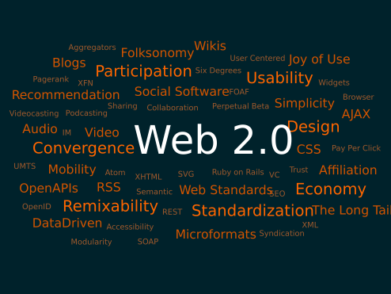

Web 2.0
The aptly named dot-com boom of 1999 saw many people move their businesses online, such as newspapers, retailers, and entertainment offices. In those early days, websites traditionally created and published their own information, which was simply viewed by site visitors, with little to no interaction between creators and users. As the web continued to grow, users began to demand more interaction from the sites they visited, and the result — typically referred to as Web 2.0 — was a more social internet.
 2.0 is characterized by interactive websites, social knowledge sharing, user-generated content, online collaboration, embedded applications and multimedia, mobile connections, and — of course — social media. It is a web in which site owners and their audience interacts continuously, average users can become content providers, and visitors are able to create a unique, personal internet experience.
2.0 is characterized by interactive websites, social knowledge sharing, user-generated content, online collaboration, embedded applications and multimedia, mobile connections, and — of course — social media. It is a web in which site owners and their audience interacts continuously, average users can become content providers, and visitors are able to create a unique, personal internet experience.